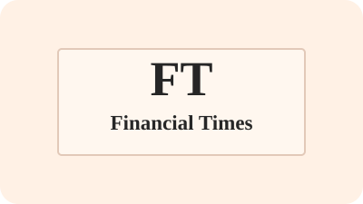

Field notes
Short notes on companies, ideas, and the occasional thing worth paying attention to.
FOUNDER · INVESTOR · TEACHER · WRITER
I build companies, back founders, teach venture, and write about technology, biology, cities, and making new things people like.
Stanford PhD. Columbia professor.

This is a home for biography, writing, ventures, teaching, conversations, and longer work.
A fuller biography, with the longer arc behind the work.
Essays, notes, and research on building, technology, policy, design, and public life.
Companies and funds I have founded, backed, or helped shape.
Courses and venture programs for people trying to build real things.
Interviews and discussions with founders, executives, and academics.
Longer-form work, guides, and archives worth revisiting.
A quick snapshot of what I am working on, teaching, and thinking about now.
Short notes on companies, ideas, and the occasional thing worth paying attention to.
On building teams that ship thoughtful work with unusual speed and consistency.
A Columbia course on building ventures with ambition, discipline, and actual contact with reality.
Software-driven science investing focused on extending the longevity of people and planet.
I've spent my career across company-building, investing, teaching, and writing. The common thread is an interest in systems: how they are built, how they fail, and how they change people's lives.
Amol Sarva is an entrepreneur, investor, and teacher.
He co-founded LifeX Ventures in 2022, a venture firm focused on software-driven science and longevity. He also created Popular Change, a company builder behind ventures including Aikito, CornerUP, Ratio21, and Dinara.
He co-founded Knotel in 2016 and helped build it into one of the world's largest flexible office businesses before its acquisition by Newmark in 2021. Earlier, he helped develop Halo Neuroscience, a neurostimulation company later acquired by Flow Neuroscience, and founded Knotable, a collaborative notes platform backed by Bloomberg Beta and 500 Startups.
His earlier work includes founding Peek, an award-winning mobile device company; serving on the founding team of Virgin Mobile USA; and working on wireless and telecom ventures at a moment when mobile still felt like the frontier. He has also advised startups across manufacturing, payments, labor, gaming, and communications.
Beyond operating, he has backed startups through his family angel fund and has been involved with roughly fifty early-stage companies. He teaches at Columbia, where he works with students on ventures, ideas, and the messy process of building something real.
He holds a PhD from Stanford and a BA from Columbia. Outside the usual categories, he has built a noted residential project in Long Island City, run a neighborhood blog, recorded long-form conversations with founders and thinkers, and published writing across technology, business, and culture.
A selection of current and past ventures, along with a few of the companies and programs I've helped support.
I've advised startups including Plethora, Fon, Payfone, Work Market, and Ouya, and mentored through Techstars, NYC Seed, Jazz Human Performance Venture Partners, and Columbia's venture programs. Through Sarva, Sarva, Sarva & Sarva, I've also backed a wide range of early-stage companies.
Writing has been a parallel practice throughout: essays, notes, research, guides, and the occasional archival rabbit hole.
My writing has appeared in Fortune, Salon, BusinessWeek, Strategy & Business, Huffington Post, Alley Insider, and elsewhere.
I teach venture as a practical discipline: not just theory, but the work of getting something real into the world.
Course site — a Columbia course where undergraduates develop ventures aimed at real problems, with an emphasis on ambition, rigor, and execution.
An advanced, small-team venture studio where students pressure-test ideas, work with experienced operators, and launch pilots before graduating.
I've also served as a mentor and advisor across accelerators, venture programs, and founder communities in New York and beyond.
I like conversations with people who have actually built, discovered, governed, or thought through something difficult.
Listen to the series — conversations with founders, CEOs, and academics about business, cities, science, and how ideas travel into the world.
Policy work that has included testimony before the FCC and the U.S. Senate on wireless spectrum and open access, back when telecom policy still managed to be both important and weirdly theatrical.
 Watch the FCC spectrum testimony
Wireless Spectrum Auction and Small Business hearing, streamed by C-SPAN on YouTube.
Watch the FCC spectrum testimony
Wireless Spectrum Auction and Small Business hearing, streamed by C-SPAN on YouTube.
I am a founder of the Founders' Roundtable in New York, a long-running gathering of venture-backed founders that has met monthly since 2006.
Longer projects, selected essays, and research that sit a little outside the normal tempo of startup life.
My Stanford dissertation examines modularity in cognitive science: a question about mind, structure, and how complex systems hang together.
A few outside links, interviews, and profiles for people who want the third-person version, the historical record, or the mildly flattering newspaper cut.

FT's "grave dancer" profile on threading resilient growth in flexible offices.
Live encyclopedic dossier on ventures, policy work, and academic projects.

Deep-dive interview on contrarian strategy, Knotel's buildout, and cultural roots.

On building markets through experimentation, learning loops, and customer empathy.


{kind=link}